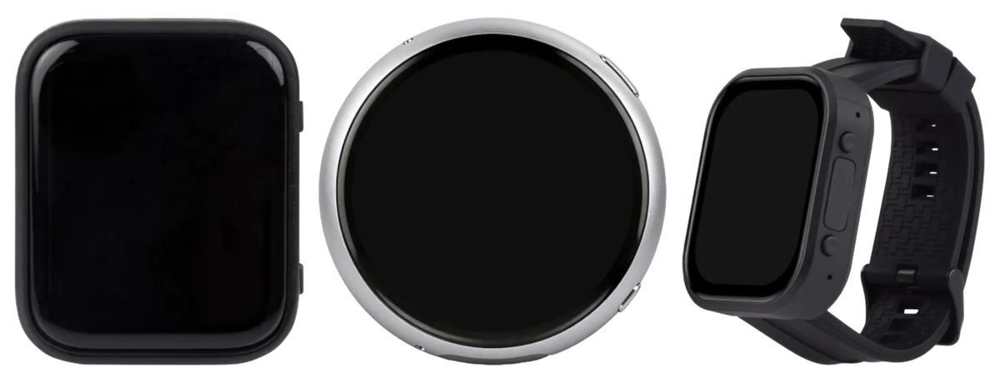
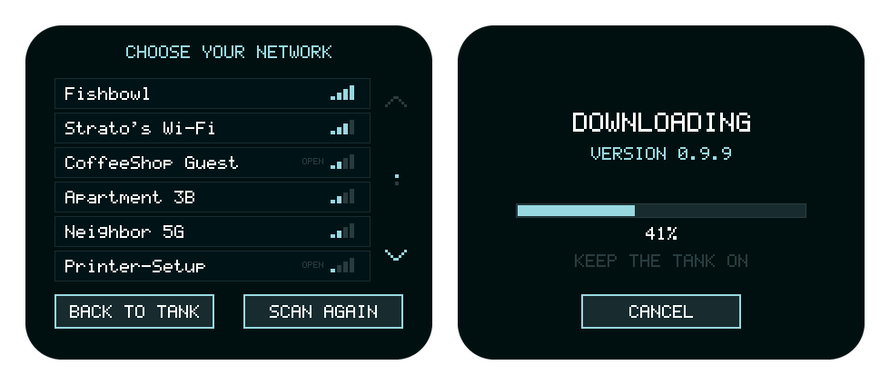
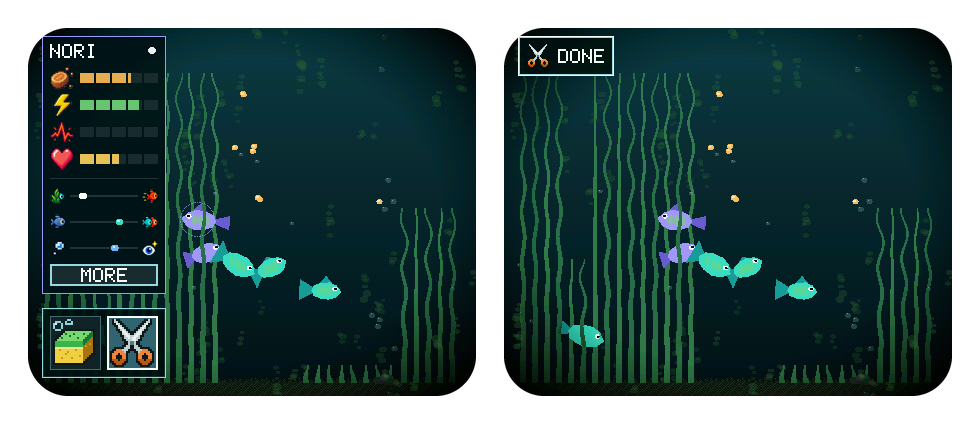
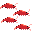
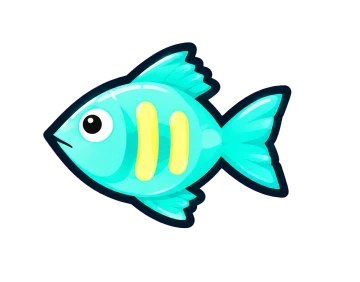

To get the latest, open the installer and click Install. Your fish stay.
Not sure which version you have? Open the settings page on your tank. The version is in small print at the bottom left, like V0.3.1 ALPHA. Tanks updated before version 0.2.0 show a short code there instead, like FW 963b619.
Version 0.3.1 alphabuild bf0c6b8Latest
Version 0.3: two new tanks, updates over Wi-Fi, and a sea urchin
Pocket Tank now runs on a round pendant and a watch, updates itself over Wi-Fi, and has a sea urchin in the shop.
Two new tanks. The pendant is a round tank that fills the whole circle. The watch is a tall tank you can wear. Same fish and same shop on all three.
Wear it either way round. On the watch, flip the screen in settings if you wear the buttons toward your elbow.
Updates over Wi-Fi. Set up Wi-Fi when you install. After that, tap CHECK FOR UPDATES in settings. Your fish stay right where they are. If an update ever goes wrong, the tank goes back to the version it had.
New in the shop: a sea urchin (120 sand dollars). It nibbles the tallest grass, even while the tank sleeps. You'll still trim now and then.
The snail now cleans overnight. Wake up to about a third less algae.
A sponge and scissors. Tap a fish and look under its card. The sponge only wipes, the scissors only trim. Tap DONE when you're finished.
Rename or sell a fish. On the milestones page, tap a fish's name. Older fish sell for more: 5, 15, 30 or 60 sand dollars. A tank keeps at least two fish.
Lights out, explained. A double tap turns the light off. The first time, the tank tells you how to turn it back on.
Taps land where you touch. Touch is calibrated on all three boards. Wiping and trimming reach the edges of the glass.
New badges. A fish's first rest in the seagrass, a school of ten shrimp, and a visit to the reef.
Your school at a glance. The fish count on the milestones page shows every fish in its own colors.
Fixed: the snail no longer floats above the sand, and the dark oval in the corner is gone.

The original, the pendant and the watch.

Pick your network once. After that it's one tap.

The toolbox under the stats card, and the scissors in hand.The sea urchin in the shop.
Install 0.3 from pocketank.com/install with the cable. It's the last time: after this, updates come over Wi-Fi.
Version 0.2.0 alphabuild b6eb24f
Version 0.2: shrimp, and fish that turn like fish
Our first numbered release. A school of shrimp for the shop, a much more natural turn for every fish, and a few fixes.
New in the shop: a shrimp school (180 sand dollars). Four cherry shrimp that clean up food that sinks into the grass, and now and then drift up to the top of the grass. They multiply: every 10 pellets they eat brings another shrimp, up to 10. Tap them to see how close the next one is. If the glass gets too dirty, they stop eating until you wipe it.
Fish turn like real fish. Instead of flipping over, a fish now swings its head toward you and turns around. They no longer flip back and forth either.
Tap a fish to see its name at the top of its card.
Food that reaches the bottom stays a little longer, 15 seconds, before it dissolves.
Fixed: when a baby fish arrives, its welcome and its badge no longer show up on top of each other. The badge now waits until you have met the new fish.
Version numbers. Your tank now shows its version at the bottom of the settings page. This one is 0.2.0.
The old turn (left) and the new one (right), at half speed.

The shrimp school in the shop.
Version 963b619
Clearer sand dollars for trimming
The shop now says exactly how trimming the grass pays.
Trimming pays 25 sand dollars for every 250 cm of grass you cut, added up over time. The shop's HOW TO EARN list now says so: "+25 250 CM OF GRASS CUT".
Version e90ce71
Algae fix, and safer saves
Algae no longer comes back as fast as you wipe it after a long sleep, and your saved tank is better protected than ever.
Fixed: algae still grows while the tank sleeps, but after a long sleep it no longer keeps coming back as fast as you wipe it away.
Every update is checked against real saved tanks before it goes out, so it can always read yours.
Going back to an older version keeps your tank (from this version on). Your fish, names, badges and sand dollars stay. Anything that older version doesn't know about goes back to its default.
The tank never wipes its own save. If it ever can't read your saved tank, it leaves it alone instead of starting over.
If a save doesn't go through, the tank quietly tries again.
The shop's HOW TO EARN list no longer says "100 IN", which read like the word "in". Thanks to AppStreetHQ for pointing it out.
Version e45140a
The reef, selling things back, and babies on their own
A big one. A whole reef for the shop, a new way to move and sell decorations, and baby fish now arrive without you turning the light on.
New in the shop: the Reef Cluster (240 sand dollars). A full reef with corals and sponges. It fills out over two weeks, then grows swaying tentacles. Pick one of three color looks.
Sell things back. Get 20% of the price back for any decoration. It goes back in the shop. The snail stays: it lives here now.
Tap and hold any decoration to move it. No more digging through menus.
Corals sit in the gravel now, instead of floating on top of it.
Babies arrive on their own. When a pair is ready, they dance in the grass and a baby appears. If the tank is asleep, the baby is waiting when it wakes.
A clearer charging icon. A lightning bolt shows when it's plugged in, so you don't have to tell colors apart.
New battery page. Tap the battery to see how much charge is left, how long it will last, and how long until it's full.
The install page was rewritten in plain language.
Version 4572b5e
Coral, and calmer plants
Your first living decoration: a coral you color yourself, which grows slowly over a few weeks.
New in the shop: Coral (100 sand dollars). Pick from eight colors. It arrives as a young fan, fills out over about 17 days, then grows a crown of tentacles.
Each blade of grass now stops at its own height, so the beds look natural instead of flat on top.
Grass grows a bit slower, and less algae builds up overnight.
Version b013bfe
The castle, a crawling snail, and one button for sleep
A castle your fish can swim through, a snail that really crawls, and a much simpler way to put the tank to sleep.
New in the shop: the Castle (150 sand dollars). The fish swim through its arch whenever they find it.
Place what you buy. Drag a new plant or decoration where you want it, and choose whether it sits behind or in front of the fish.
The snail crawls now, with a wavy foot and swaying eyes. Tap it to see how much algae it has eaten.
One button for sleep. Press PWR to sleep and again to wake. After 20 minutes asleep it powers down fully and can sit on a shelf for months. Your fish live through the time away.
Updates never erase your tank. Your fish, names, badges and sand dollars stay. (See below for how.)
Your firmware version now shows at the bottom of the settings page.
No new babies while the glass is dirty. Keep it clean!
A MORE button on the fish card, and arrows to flip through badges.
Version 980a00e
Sound, sand dollars and the shop
The tank can talk now, and caring for it earns you something to spend.
Sound. Little sounds when you feed, when the fish eat, when a baby arrives, when you earn a badge, and more.
Sand dollars. Feeding, cleaning, trimming and raising fish all earn them.
The shop. Buy a sword plant (40) or a snail that cleans the glass (80).
A settings page for brightness and volume.
Fish get bored. A fish that's done the same thing for a while goes and does something else, so they don't get stuck circling the bubbles.
The light is now a double-tap on the glass. There's an option to turn it off by itself when you put the tank down.
Version cc4ed34
Babies are a big deal now
Every new fish gets a proper welcome, and you can see what the tank needs for the next one.
A new baby! The tank stops to introduce each newborn. You name it, and see which parent it got its colors from.
Babies look like their family. Body color from one parent, markings from the other.
The New Fry checklist shows what's needed for the next baby, with a HOW? button for tips.
Fish keep growing while the tank sleeps (slowly).
Trimming reaches the last blade of grass by the glass.
Version 203fd71
Name your fish, and earn badges
A new tank now starts with a short setup, and the milestones page got its badges.
First-time setup. Place the bubbles, then name your two baby fish on a spinning letter wheel and pick their colors.
Badges. Twelve pixel-art badges for firsts: first meal from you, first visit to the reef, first clean glass, and more.
Better battery life.
The shadow that used to scare the fish is gone. It never felt right in a desk tank.
The installer now updates itself every time a new version is ready.
Version 3ea8d9a
Install from your browser
Pocket Tank goes public. No tools to install: plug in the board, open a page, click a button.
The browser installer. Works in Chrome or Edge on a computer.
Start over any time. Hold BOOT and tap the glass to reset the tank.

Update any time. Your fish stay.
Updates install from the same page with the same button. An update replaces the app and the fish brain. It never touches the part of the board where your tank is saved.
Your fish and their names
Their trust, growth and families
Every badge you've earned
Your sand dollars
Everything you've bought and placed
How clean the glass is (sorry)
Every new version can read tanks saved by every older one, and each update is checked against real saved tanks before it goes out. Going back to an older version keeps your tank too. The only ways to lose a tank are on purpose: the reset (hold BOOT and tap the glass, then answer YES) or the erase button on the install page.
Newsletter
Hear about the next one
A short email when there's a new update, a new episode, or news about ready-made tanks.
Can we count your visit? We use Google Analytics to see how visitors interact with this site. No ads, nothing sold. Privacy